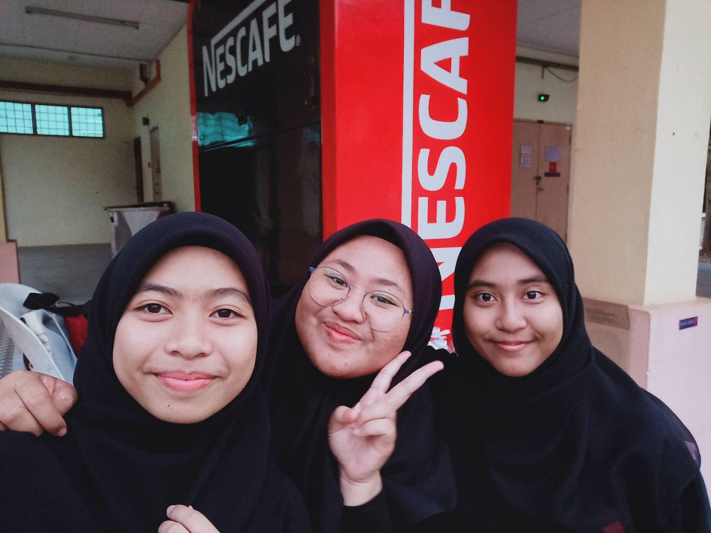

In my first semester of Diploma of Library Management in UiTM Kedah, I was offered to join a programme named Nescafe Youth Entrepreneurship Programme (NYEP). It was my first ever work that I have been doing and because of that, I was very excited while at the same time it was quite tiring because usually after the class I will work at the Nescafe hub and go to class, again if there are any, so my routine schedule was packed. Therefore, I believe that those experiences working part-time as a student were very meaningful and also useful for my future as well.
My moment of working experience